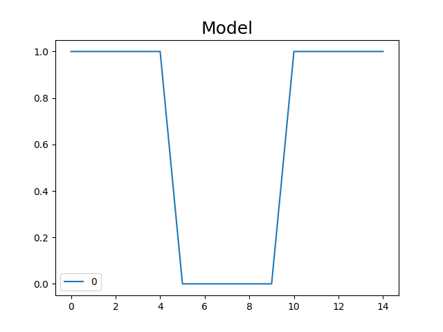
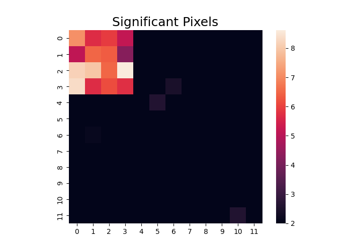

Note
Go to the end to download the full example code
Adjacency Class¶
Nltools has an additional data structure class for working with two-dimensional square matrices. This can be helpful when working with similarity/distance matrices or directed or undirected graphs. Similar to the Brain_Data class, matrices are vectorized and can store multiple matrices in the same object. This might reflect different brain regions, subjects, or time. Most of the methods on the Adjacency class are consistent with those in the Brain_Data class.
Load Data¶
Similar to the Brain_Data class, Adjacency instances can be initialized by passing in a numpy array or pandas data frame, or a path to a csv file or list of files. Here we will generate some fake data to demonstrate how to use this class. In addition to data, you must indicate the type of matrix. Currently, you can specify [‘similarity’,’distance’,’directed’]. Similarity matrices are symmetrical with typically ones along diagonal, Distance matrices are symmetrical with zeros along diagonal, and Directed graph matrices are not symmetrical. Symmetrical matrices only store the upper triangle. The Adjacency class can also accommodate labels, but does not require them.
from nltools.data import Adjacency
from scipy.linalg import block_diag
import numpy as np
m1 = block_diag(np.ones((4, 4)), np.zeros((4, 4)), np.zeros((4, 4)))
m2 = block_diag(np.zeros((4, 4)), np.ones((4, 4)), np.zeros((4, 4)))
m3 = block_diag(np.zeros((4, 4)), np.zeros((4, 4)), np.ones((4, 4)))
noisy = (m1 * 1 + m2 * 2 + m3 * 3) + np.random.randn(12, 12) * 0.1
dat = Adjacency(
noisy, matrix_type="similarity", labels=["C1"] * 4 + ["C2"] * 4 + ["C3"] * 4
)
Basic information about the object can be viewed by simply calling it.
print(dat)
nltools.data.adjacency.Adjacency(shape=(66,), square_shape=(12, 12), Y=(0, 0), is_symmetric=True,matrix_type=similarity)
Adjacency objects can easily be converted back into two-dimensional matrices with the .squareform() method.
dat.squareform()
array([[ 0. , 0.92018409, 0.74068743, 1.02260813, 0.06689804,
0.01782825, 0.03962485, -0.1917708 , -0.21237046, 0.07989363,
0.21710569, 0.19311052],
[ 0.92018409, 0. , 0.96885124, 0.96970485, 0.14825097,
0.16105497, 0.01438529, 0.10534895, 0.13494436, 0.04394098,
0.06428946, 0.0073345 ],
[ 0.74068743, 0.96885124, 0. , 0.93270705, 0.0508121 ,
-0.07529936, 0.04727365, 0.01326191, 0.04173923, 0.10826393,
0.06454924, -0.0131297 ],
[ 1.02260813, 0.96970485, 0.93270705, 0. , 0.10779176,
0.19337345, -0.17196272, 0.26921398, -0.0575632 , 0.04814594,
0.12723002, -0.0521637 ],
[ 0.06689804, 0.14825097, 0.0508121 , 0.10779176, 0. ,
2.14378751, 1.96539451, 1.86013451, -0.20117807, 0.01275289,
-0.01921029, 0.09297117],
[ 0.01782825, 0.16105497, -0.07529936, 0.19337345, 2.14378751,
0. , 1.98317644, 1.89140943, 0.18990611, -0.07635994,
0.02489561, 0.11711137],
[ 0.03962485, 0.01438529, 0.04727365, -0.17196272, 1.96539451,
1.98317644, 0. , 2.04430352, -0.15159531, -0.10679278,
-0.07479945, 0.2703446 ],
[-0.1917708 , 0.10534895, 0.01326191, 0.26921398, 1.86013451,
1.89140943, 2.04430352, 0. , 0.04966625, 0.02380288,
-0.02481289, -0.14314387],
[-0.21237046, 0.13494436, 0.04173923, -0.0575632 , -0.20117807,
0.18990611, -0.15159531, 0.04966625, 0. , 2.9217931 ,
3.10791825, 3.02177763],
[ 0.07989363, 0.04394098, 0.10826393, 0.04814594, 0.01275289,
-0.07635994, -0.10679278, 0.02380288, 2.9217931 , 0. ,
3.02875458, 2.97004928],
[ 0.21710569, 0.06428946, 0.06454924, 0.12723002, -0.01921029,
0.02489561, -0.07479945, -0.02481289, 3.10791825, 3.02875458,
0. , 2.92770931],
[ 0.19311052, 0.0073345 , -0.0131297 , -0.0521637 , 0.09297117,
0.11711137, 0.2703446 , -0.14314387, 3.02177763, 2.97004928,
2.92770931, 0. ]])
Matrices can viewed as a heatmap using the .plot() method.
dat.plot()
The mean within a a grouping label can be calculated using the .cluster_summary() method. You must specify a group variable to group the data. Here we use the labels.
print(dat.cluster_summary(clusters=dat.labels, summary="within", metric="mean"))
{'C3': 2.9963336940336327, 'C2': 1.9813676530744562, 'C1': 0.9257904640198676}
Regression¶
Adjacency objects can currently accommodate two different types of regression. Sometimes we might want to decompose an Adjacency matrix from a linear combination of other Adjacency matrices. Other times we might want to perform a regression at each pixel in a stack of Adjacency matrices. Here we provide an example of each method. We use the same data we generated above, but attempt to decompose it by each block of data. We create the design matrix by simply concatenating the matrices we used to create the data object. The regress method returns a dictionary containing all of the relevant information from the regression. Here we show that the model recovers the average weight in each block.
X = Adjacency([m1, m2, m3], matrix_type="similarity")
stats = dat.regress(X)
print(stats["beta"])
[0.92579046 1.98136765 2.99633369]
In addition to decomposing a single adjacency matrix, we can also estimate a model that predicts the variance over each voxel. This is equivalent to a univariate regression in imaging analyses. Remember that just like in imaging these tests are non-independent and may require correcting for multiple comparisons. Here we create some data that varies over matrices and identify pixels that follow a particular on-off-on pattern. We plot the t-values that exceed 2.
from nltools.data import Design_Matrix
import matplotlib.pyplot as plt
data = Adjacency(
[m1 + np.random.randn(12, 12) * 0.5 for x in range(5)]
+ [np.zeros((12, 12)) + np.random.randn(12, 12) * 0.5 for x in range(5)]
+ [m1 + np.random.randn(12, 12) * 0.5 for x in range(5)]
)
X = Design_Matrix([1] * 5 + [0] * 5 + [1] * 5)
f = X.plot()
f.set_title("Model", fontsize=18)
stats = data.regress(X)
t = stats["t"].plot(vmin=2)
plt.title("Significant Pixels", fontsize=18)
- 
- 
Text(0.5, 1.0, 'Significant Pixels')
Similarity/Distance¶
We can calculate similarity between two Adjacency matrices using .similiarity().
stats = dat.similarity(m1)
print(stats)
{'correlation': 0.29879205721671714, 'p': 0.010397920415916816}
We can also calculate the distance between multiple matrices contained within a single Adjacency object. Any distance metric is available from the sci-kit learn by specifying the method flag. This outputs an Adjacency matrix. In the example below we see that several matrices are more similar to each other (i.e., when the signal is on). Remember that the nodes here now represent each matrix from the original distance matrix.
dist = data.distance(metric="correlation")
dist.plot()
Similarity matrices can be converted to and from Distance matrices using .similarity_to_distance() and .distance_to_similarity().
dist.distance_to_similarity(metric="correlation").plot()
Multidimensional Scaling¶
We can perform additional analyses on distance matrices such as multidimensional scaling. Here we provide an example to create a 3D multidimensional scaling plot of our data to see if the on and off matrices might naturally group together.
dist = data.distance(metric="correlation")
dist.labels = ["On"] * 5 + ["Off"] * 5 + ["On"] * 5
dist.plot_mds(n_components=3)
/usr/share/miniconda3/envs/test/lib/python3.8/site-packages/sklearn/manifold/_mds.py:298: FutureWarning: The default value of `normalized_stress` will change to `'auto'` in version 1.4. To suppress this warning, manually set the value of `normalized_stress`.
warnings.warn(
Graphs¶
Adjacency matrices can be cast to networkx objects using .to_graph() if the optional dependency is installed. This allows any graph theoretic metrics or plots to be easily calculated from Adjacency objects.
import networkx as nx
dat = Adjacency(m1 + m2 + m3, matrix_type="similarity")
g = dat.to_graph()
print("Degree of each node: %s" % g.degree())
nx.draw_circular(g)
Degree of each node: [(0, 3), (1, 3), (2, 3), (3, 3), (4, 3), (5, 3), (6, 3), (7, 3), (8, 3), (9, 3), (10, 3), (11, 3)]
Total running time of the script: (0 minutes 6.996 seconds)